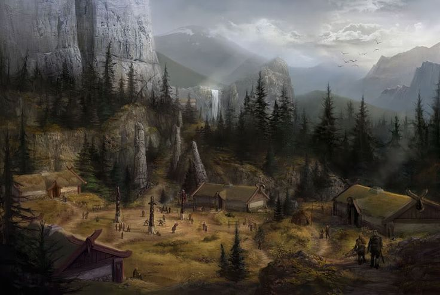

Government
Tribal Confederation - Once separate tribes, the Rats of the Raten Empire united arround 800 AT by the great conquerer Shu. Shu became Ru'Ha'Ha, (High Warlord), and set up his court in the new city of Shu'Halo in the shadow of the Great Ken. Since then, when the old Ru'Ha'Ha dies, the Ru'Ha from the six rat tribes gather and stake their claims to become the new Ru'Ha'Ha. If an appointment is not reached, then the remaining claiments fight to the death or until surrender is given. The winner becomes the new Ru'Ha'Ha.
Terrain
The land of Raten consists mostly of a vast plains surrounded by the Pontic Stepps to the north, the Decon Swamps to the East, the Kansho Sea to the south and the Isha Awak to the West. The vast plains shape the rats combat style of raiding and pillaging with extreme speed, often atop of grasshoppers. The Plains also supplies the main food source of the area, Dung Beatles. The size of the Dung Beatles is that of 10 mice, and often the rats will chase them atop of their grasshoppers to kill them for feasts.
Common Wildlife
Rats - Large, mouse like creatures twice the size of a mouse. They have twice the strength of mice as well, but are less dexterious. Rats believe death by fighting to be the highest honor and rarely ever back down from a fight. For an adolisent to be considered an adult, the young rat must take part in a Une'fe, or solo hunt, in which he sets out with only the clothes on his back and must slay a Dung Beatle and return it too his tribe.
Hawks
Snakes
Dung Beatles
Centipedes
Ants
Areas of Note
Shu'Halo - The Court of the Ru'Ha'Ha. Shu'Halo is was erected after the great uniting by Shu in the shadow of a mighty Ken. In rat mythology, this ken was used by a mighty rat spirit to fight off and kill their enemies. When they were purged, the rat spirit supposablly laid his sword to rest and entered a great slumber to retsurn when the rats are threatened once more.
Shu'Halo consists of many bazaars that trade the goods that the rat warriors offer in tribute from the conquests of neighbors. As such, when the rats are doing well, the bazaar is full of exotic and strange goods. Very few non-rats are allowed to enter into the city, as they or their family have to prove worth to the Ru'Ha'Ha with either tribute or fighting skill.
An'She - Steppe of the Sun. The ancestrial home of the An tribe of rats, An'she is built on the base of the Pontic Steppes. The An rats show a glimmar in their fur, often discribed as the radiance of the sun. This trait makes them regarded as one of the most beautiful of the rat tribes, as well as the most vain. An'She has a powerful castle built into the side of the Steppes that makes for a great hold out location when the city is under siege.

Ishamuhale - The City of the Spear Wielders. Ishamuhale is the home of the least populated rat tribe, Isham. The Isham rats are noted for the blacker fur, and skill with the spear. In 928 AT a mouse from the Mordla Diamyo of Hojo came to the leader of Ru'Ha of Isham, Warlord Yari. Yari made a deal with the mouse that in exchange for a large some of gold and the mouse's son, Kaito Mordla. This mouse was raised with the rats. In 932 AT, Kaito was accepted as part of the Isham tribe when he completed his Une'fe and became an Adult. Kaito worked with the Isham tribe and hired them to help seige and ultimately conquer Izu, but in his lust for power, Kaito declaired that the rats were pillagers and raiders and betrayed them. Infurated at Kaito's betrial, Warlord Yari vowed vengance on his fallen adoptive son and began preparing for war.

Washete'Pawne - The Ring of Ishte. Washete'Pawne is home to the only non-blood tribe of Rats, the Washete. The Washete are made up of rats from all over raten whom are Ishte, or rats that have an affinity to sensing and controlling spiritual energy. These rats are then sent off with high honors to begin their training as Ishte at Washete'Pawne. Once trained the Ishte will either return to their tribe to become Ru'Ishte, War Shamans, join the Ring of Ishte in study,maintaining spiritual harmony, spiritual awakenment, training of younglings, or defending Raten against grave outside threats.
Echeyakee - Fortress of the Shiroi. Located on the newly created boarder of Yuan Dai, Echeyakee is the home of the Shiroi tribe of Rats. The Shiroi are an all white furred tribe that are one of the only rats to have settled in a forest as compared to the plains of Raten. The Shiroi gained an large influx of rat refugees when they were displaced by the Yuan Dain Weasals when they embarked on their conquest from across the great expanse. They are extremely skilled with the bow and can kill a beast from over 400 meters away.
Mu'Shu - The Tribe of Shadows. Mu'Shu is home to the Mu tribe of Rats. Unlike the proud warrior tribes of Raten, the Mu use assination, cunning, and blood magic to best their foes. Most Tribes dislike Mu rats but understand their nessacity in their ways of war. As such, Mu tend to be outcasts when they travel out of Mu'Shu and often stick to taverns or brothels in foriegn cities.
Other Regions
Home